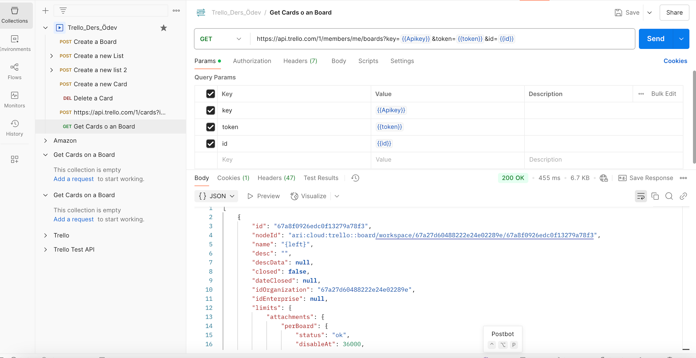

Gorev 07
Pano ve kart bilgisini alin
Kullaniciya ait pano bilgilerini ve ilgili kart verilerini listeleme istegi.
Istek Bilgisi
Test Betigi
Bu gorev icin test scripti belirtilmedi.
Yanit Kaniti

Gorev 07
Kullaniciya ait pano bilgilerini ve ilgili kart verilerini listeleme istegi.
Bu gorev icin test scripti belirtilmedi.
